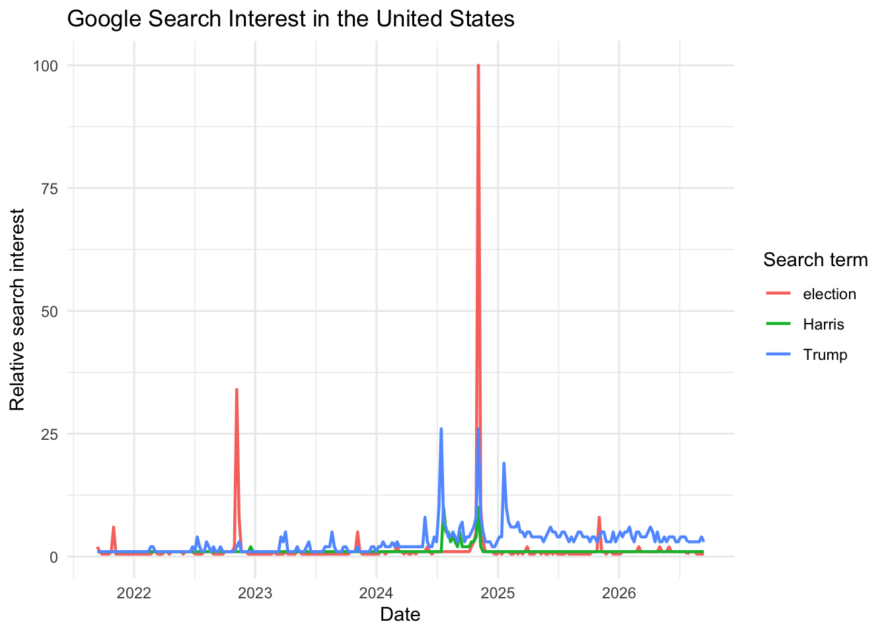

Date and time retrieved: September 15, 2026, at 5:32 PM CDT
1.d. News-Term Query
Search term: Federal Reserve
Geography: United States
Time window: Past five years
Category: All categories
Search type: Web Search
Date and time retrieved: September 15, 2026, at 5:38 PM CDT
2. Inspecting the Website Data
2.a. Date Range and Number of Observations
The downloaded file covers September 1, 2021, through September 1, 2026. The data are reported monthly, with 61 observations for each search term.
2.b. Reporting Interval
When the time window was set to the past five years, Google Trends reported the data at monthly intervals. After I changed the time window to the past 12 months and downloaded the data again, the reporting interval changed from monthly to weekly. The 12-month file covers September 14, 2025, through September 13, 2026, and contains 53 weekly observations for each search term.
2.c. Units and Normalization
The values are not raw search counts. They represent relative search interest normalized on a scale from 0 to 100. Google calculates each term’s search interest relative to all searches in the selected geography and time period and then rescales the results. A value of 100 represents the point at which relative search interest was highest within the query. A value of 0 does not necessarily mean that no searches occurred; it may indicate that relative interest was very low or that there was not enough data to report.
2.d. Removing a Search Term
After I removed Election from the query and downloaded the data again, the values for the remaining terms did not stay the same. Trump’s values changed in all 61 months, and its maximum increased from 39 to 100. Kamala Harris’s values changed in 29 of the 61 months, and its maximum increased from 8 to 19.
This happened because Google Trends normalizes and rescales the results within each individual query. Removing one term changes the comparison used to construct the 0–100 scale. Therefore, values obtained from differently specified queries are not directly comparable.
3. Collecting Data with R
The following code shows the gtrendsR queries I used to collect the Google Trends data. The code is displayed for transparency, but it is not run again when this page is rendered because I saved the original results as CSV files.
Rows: 786 Columns: 7
── Column specification ────────────────────────────────────────────────────────
Delimiter: ","
chr (5): hits, keyword, geo, time, gprop
dbl (1): category
dttm (1): date
ℹ Use `spec()` to retrieve the full column specification for this data.
ℹ Specify the column types or set `show_col_types = FALSE` to quiet this message.
Warning in ifelse(r_data$hits == "<1", 0.5, as.numeric(r_data$hits)): NAs
introduced by coercion
ggplot( r_data,aes(x = date, y = hits_numeric, color = keyword)) +geom_line(linewidth =0.8) +labs(title ="Google Search Interest in the United States",x ="Date",y ="Relative search interest",color ="Search term" ) +theme_minimal()

Relative Google search interest in Trump, Harris, and election in the United States over the past five years.
The figure shows changes in relative search interest in Trump, Harris, and election in the United States. All three series increased around major political events, although election displayed the largest peak.
3.c. Data Frames Returned by gtrendsR
The gtrendsR object contained seven data frames. The time-series CSV downloaded from the Google Trends website provided only interest_over_time. It did not include the following six data frames:
interest_by_country
interest_by_region
interest_by_dma
interest_by_city
related_topics
related_queries
A Note on Search Terms
The time series for Harris and Kamala Harris were not identical. Although both terms showed sharp increases around major political events in 2024, search interest in Harris was generally higher. The word Harris can refer to a county, a supermarket chain, and many other people besides Kamala Harris.
This difference illustrates a problem of construct validity: the observable search term does not perfectly represent the theoretical concept that the researcher intends to measure. Using the broader term Harris introduces measurement error because searches about Kamala Harris are combined with unrelated searches. Therefore, interpreting changes in searches for Harris as changes in public interest in Kamala Harris could overstate or misrepresent that interest.
4. Comparing the Two Collection Methods
4.a. Comparing the Time Series
The website and gtrendsR results differed in both their date ranges and reporting intervals. The website data covered September 1, 2021, through September 1, 2026, and contained 61 monthly observations for each search term. The R data covered September 12, 2021, through September 13, 2026, and contained 262 weekly observations for each term, for a total of 786 observations.
To make an approximate comparison, I aggregated the weekly R observations by calculating their monthly averages. For Trump, the R monthly average was lower than the website value in all 61 months. On average, the R values were 7.71 points lower. For Election, the R monthly average was lower in 60 of the 61 months and was 3.15 points lower on average.
Despite these differences in magnitude, the two sources showed very similar patterns over time. The correlation between the website and R series was 0.992 for Trump and 0.997 for Election. I could not directly compare the remaining series because the website query used Kamala Harris, whereas the R script used Harris. The differences between the two sources may reflect their different reporting intervals, search terms, sampling, and normalization procedures.
4.b. Evaluating the Two Methods
Reproducibility
With the website method, the researcher must manually record the query settings and retrieval time. If that information is missing, another researcher may not be able to reproduce the search. With gtrendsR, the search terms, geography, time window, category, and search type are written directly in the code, making the query easier to repeat.
However, Google Trends relies on sampled data, so running the same code again may not produce exactly the same values. To preserve the precise dataset used in an analysis, researchers should save the original CSV file and record its retrieval time in addition to saving the code.
Provenance
The gtrendsR method provides a clearer record of how the data were generated because the query settings remain in the code. By contrast, a CSV downloaded from the website may not preserve every setting selected by the user or the exact retrieval time, so those details must be recorded separately.
The R method does not automatically record the retrieval time either. Researchers should therefore include the date and time in a filename, code comment, or research log.
Scale
The website is manageable when only a few search terms are needed. If a researcher needed data for 50 terms, however, repeatedly entering query settings and downloading separate files would take considerable time and increase the risk of human error.
With gtrendsR, loops or functions can automate the collection and storage of data for many search terms and countries. This makes the R method more scalable. Nevertheless, Google Trends limits the number of terms in a single query and may restrict repeated requests, so a large collection task may need to divide the terms into smaller groups and pause between requests.
Fragility
Both methods can fail. With the website method, the Google Trends interface may change, or the researcher may accidentally select the wrong settings or download the wrong file. With the R method, gtrendsR relies on an unofficial connection to Google Trends. Changes to the Google service or website structure may therefore cause the code to stop working. Rate limits, internet problems, and package updates may also produce errors or unexpected results.
Researchers can identify these problems by examining error and warning messages and checking the search terms, date range, number of rows, missing values, and minimum and maximum values. Plotting the data and comparing repeated downloads can also reveal unexpected changes.
4.c. Repeating the Same Query
I ran the same gtrendsR query twice on September 22, 2026: first at 6:03 PM CDT and again at 6:07 PM CDT. The results were not identical. Of the 786 observations, 26 search-interest values changed, generally by only one point.
This variation shows that Google Trends results can differ because they are calculated using sampled and normalized search data. Therefore, the values should not be treated as fixed or perfectly precise measurements. Researchers should report the retrieval time, preserve the original data, acknowledge the possibility of sampling variation, and avoid drawing strong conclusions from very small numerical differences.